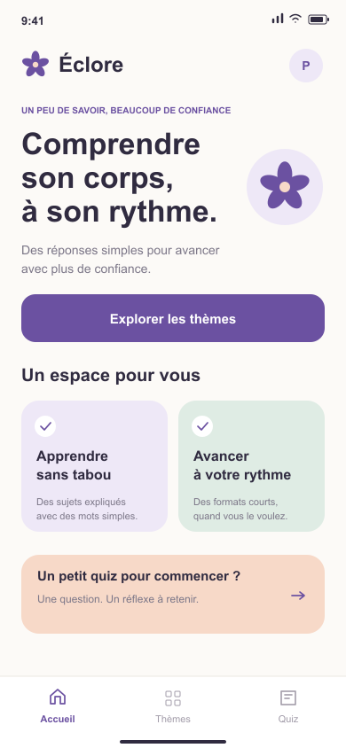
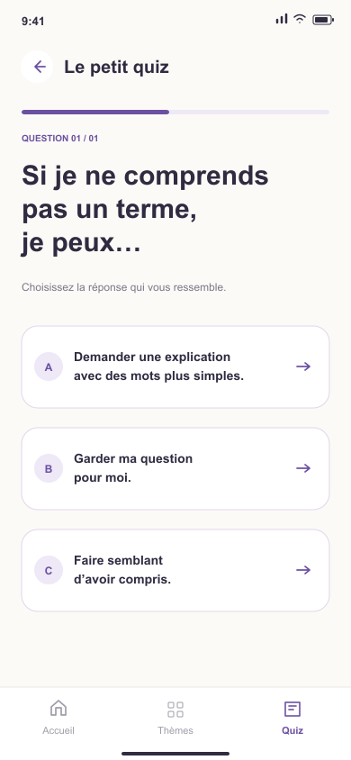

Comprendre, simplement.
Des sujets expliqués avec des mots du quotidien, dans des formats courts et faciles à parcourir.
UN PROJET QUI PREND RACINE
Parler de santé ne devrait pas être compliqué. Éclore imagine un espace pour apprendre, comprendre et oser poser ses questions, sans tabou.
Éducation à la santé des femmes · Projet étudiant

01 / NOTRE POINT DE DÉPART
Un mot qu’on ne comprend pas, une question qu’on hésite à poser… Le projet Éclore part d’une idée simple : mieux comprendre peut aider à prendre part à la conversation.
Des sujets expliqués avec des mots du quotidien, dans des formats courts et faciles à parcourir.
Un espace imaginé pour accueillir les questions sur le corps, le cycle, les relations et le consentement.
Lire un conseil, tester ce qu’on a retenu, revenir plus tard. Chacune choisit son point de départ.

02 / DÉJÀ QUELQUES POUSSES
Notre premier prototype mobile vous invite à explorer un thème, lire quelques conseils et répondre à un petit quiz. Six écrans pour découvrir l’esprit d’Éclore.
Un prototype de démonstration, à explorer sur Figma.
03 / LA SUITE S’ÉCRIT ENSEMBLE
Quels contenus aimeriez-vous trouver sur Éclore ? Partagez vos préférences pour nous aider à imaginer la suite.
Un court questionnaire sur le projet. Aucune information médicale n’est demandée.
Nous préparons cet espace pour recueillir vos idées.
En attendant, vous pouvez explorer le prototype.